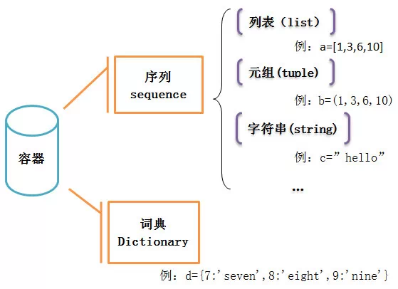
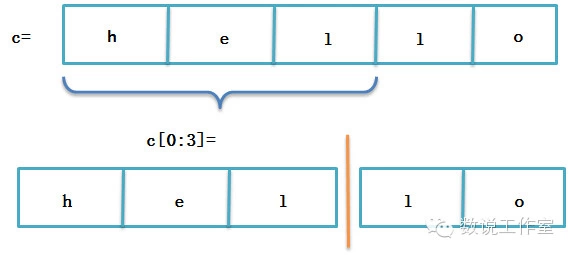
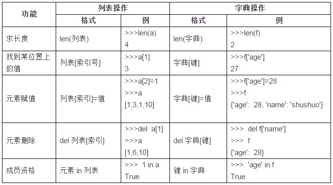

量化分析师的Python日记【第1天：谁来给我讲讲Python？】
“谁来给我讲讲Python？”
作为无基础的初学者，只想先大概了解一下Python，随便编个小程序，并能看懂一般的程序，那些什么JAVA啊、C啊、继承啊、异常啊通通不懂怎么办，于是我找了很多资料，写成下面这篇日记，希望以完全初学者的角度入手来认识Python这个在量化领域日益重要的语言
一，熟悉基本
在正式介绍python之前，了解下面两个基本操作对后面的学习是有好处的：
1）基本的输入输出 可以在Python中使用+、-、*、/直接进行四则运算。
1+3*3
10
（2）导入模块 使用import可以导入模块，导入之后，就可以使用这个模块下面的函数了。 比如导入math模块，然后使用math模块下面的sqrt函数：
from math import sqrt
sqrt(9)
3.0
32.0
二，容器
1，什么是容器
开始学Python时，被它的数据结构，什么字典、序列、元组等等搞的很混乱，估计有跟我一样的初学者，所以我梳理了一下留存： 首先要从容器说起，Python中有一种名为容器的数据结构，顾名思义，容器，就是装数据的器具，它主要包括序列和词典，其中序列又主要包括列表、元组、字符串等（见下面那张图）。

列表的基本形式比如：[1,3,6,10]或者[‘yes’,’no’,’OK’]
元组的基本形式比如：(1,3,6,10)或者(‘yes’,’no’,’OK’)
字符串的基本形式比如：’hello’
以上几种属于序列，序列中的每一个元素都被分配一个序号——即元素的位置，也称为“索引”，第一个索引，即第一个元素的位置是0，第二个是1，依次类推。列表和元组的区别主要在于，列表可以修改，而元组不能（注意列表用中括号而元组用括号）。序列的这个特点，使得我们可以利用索引来访问序列中的某个或某几个元素，比如：
a=[1,3,6,10]
a[2]
6
b=(1,3,6,10)
b[2]
6
c='hello'
c[0:3]
'hel'
而与序列对应的“字典”则不一样，它是一个无序的容器，
它的基本形式比如：d={7:'seven',8:'eight',9:'nine'}
这是一个“键—值”映射的结构，因此字典不能通过索引来访问其中的元素，而要根据键来访问其中的元素：
d={7:'seven',8:'eight',9:'nine'}
d[8]
'eight'
2、序列的一些通用操作
除了上面说到的索引，列表、元组、字符串等这些序列还有一些共同的操作。
（1）索引（补充上面）
序列的最后一个元素的索引，也可以是-1，倒数第二个也可以用-2，依次类推：
a=[1,3,6,10]
print a[3]
print a[-1]
10
10
（2）分片
使用分片操作来访问一定范围内的元素，它的格式为：
a[开始索引:结束索引:步长]
那么访问的是，从开始索引号的那个元素，到结束索引号-1的那个元素，每间隔步长个元素访问一次，步长可以忽略，默认步长为1。
c='hello'
c[0:3]
'hel'
这个就好像把一个序列给分成几片几片的，所以叫做“分片”

（3）序列相加
即两种序列合并在一起，两种相同类型的序列才能相加
[1,2,3]+[4,5,6]
[1, 2, 3, 4, 5, 6]
'hello,'+'world!'
'hello,world!'
（4）成员资格
为了检查一个值是否在序列中，可以用in运算符
a='hello'
print 'o' in a
print 't' in a
True
False
3、列表操作
以上是序列共有的一些操作，列表也有一些自己独有的操作，这是其他序列所没有的
（1）List函数
可以通过list(序列)函数把一个序列转换成一个列表：
list('hello')
['h', 'e', 'l', 'l', 'o']
（2）元素赋值、删除
元素删除——del a[索引号]
元素赋值——a[索引号]=值
a
'hello'
b=list(a)
b
['h', 'e', 'l', 'o']
b[2]='t'
b
['h', 'e', 't', 'o']
分片赋值——a[开始索引号:结束索引号]=list(值)
为列表的某一范围内的元素赋值，即在开始索引号到结束索引号-1的区间几个元素赋值，比如，利用上面语句，如何把hello变成heyyo？
b=list('hello')
b
['h', 'e', 'l', 'l', 'o']
b[2:4]=list('yy')
b
['h', 'e', 'y', 'y', 'o']
注意虽然“ll”处于“hello”这个单词的第2、3号索引的位置，但赋值时是用b[2:4]而不是b[2:3]，另外注意list()用小括号。
（3）列表方法
上面说过list函数，函数这个东西在很多语言中都有，比如excel里面的if函数、vlookup函数，SQL里面的count函数，以及各种语言中都有的sqrt函数等等，python中也有很多函数。 Python中的方法，是一个“与某些对象有紧密联系的”函数，所以列表方法，就是属于列表的函数，它可以对列表实现一些比较深入的操作，方法这样调用：
对象.方法(参数)
那么列表方法的调用就理所当然是：
列表.方法(参数)
常用的列表方法这么几个，以a=['h','e','l','l','o']为例：
a=['h','e','l','l','o']
a
['h', 'e', 'l', 'l', 'o']
给列表a的n索引位置插入一个元素m: a.insert(n,m)
a.insert(2,'t')
a
['h', 'e', 't', 'l', 'l', 'o']
给列表的最后添加元素m: a.append(m)
a.append('q')
a
['h', 'e', 't', 'l', 'l', 'o', 'q']
返回a列表中，元素m第一次出现的索引位置: a.index(m)
a.index('e')
1
删除a中的第一个m元素: a.remove(m)
a.remove('e')
a
['h', 't', 'l', 'l', 'o', 'q']
将列表a从大到小排列: a.sort()
a.sort()
a
['h', 'l', 'l', 'o', 'q', 't']
4、字典操作
（1）dict函数
dict函数可以通过关键字参数来创建字典，格式为：
dict(参数1=值1,参数2=值2, …)={参数1:值1, 参数2=值2, …}
比如，如何创建一个名字name为jiayounet，年龄age为28的字典？
dict(name='jiayounet',age=27)
{'age': 27, 'name': 'jiayounet'}
（2）基本操作
字典的基本行为与列表在很多地方都相似，下面的例子以序列a=[1,3,6,10]，字典f={'age': 27, 'name': 'shushuo'}为例

日记小结： 今天学习了Python的基本页面、操作，以及几种主要的容器类型，天还要学习Python的函数、循环和条件、类，然后才算是对Python有一个大致的了解。